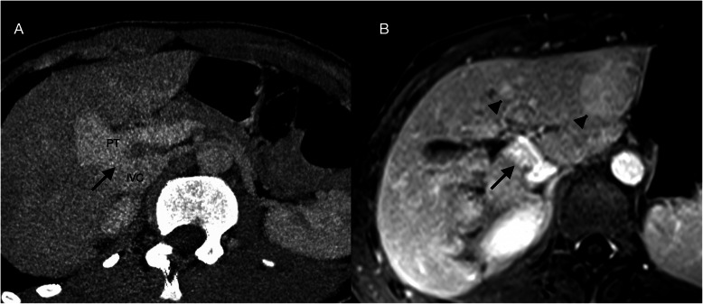
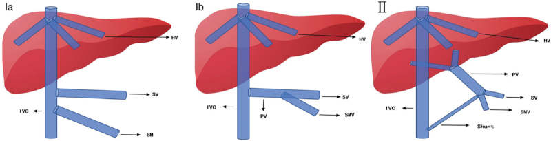
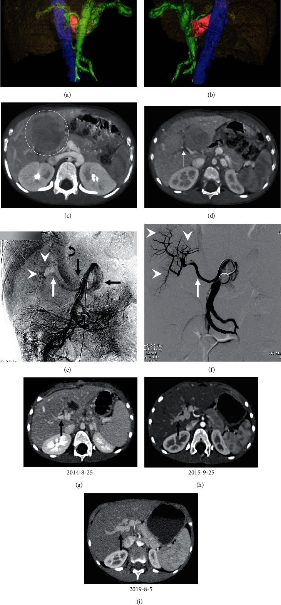
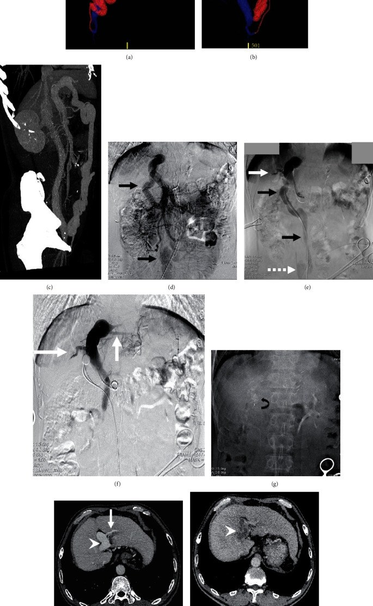
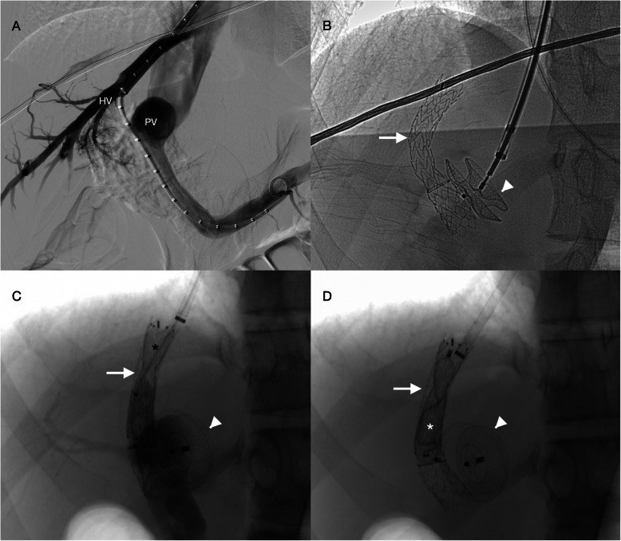

1907 — Shunt cửa–chủ lớn KHÔNG xơ gan (CEPS/Abernethy) & bít shunt qua da: vì sao phải đo áp lực tĩnh mạch cửa bằng bóng chẹn trước khi đóng / Large congenital extrahepatic portosystemic shunt (CEPS, Abernethy malformation): classification, decision-making by balloon-occlusion portal pressure, and percutaneous closure
Tags: pattern:shunt-cua-chu pattern:gan-co-not pattern:gan-teo pattern:giam-ngam-nhu-mo pattern:tm-cua-gian pattern:di-dang-mach pattern:gan-nao vung:gan vung:tm-cua vung:tm-chu-duoi score:gradient-ap-luc incidentaloma:gan-not protocol:Doppler protocol:CEUS protocol:CTA protocol:MRI protocol:venography-do-ap-luc protocol:bong-boc-tach protocol:nut-mach
Mức chắc chắn (certainty): tổng hợp y văn (literature synthesis) — số liệu lấy từ các bài open-access đã đọc toàn văn: Zhang J et al., Biomed Res Int 2021;2021:9951393 (PMC8187072, CC BY 4.0 — 23 bệnh nhân type II, so sánh mổ buộc với nút mạch, có áp lực tĩnh mạch cửa trước/sau); Zeng P et al., Chin Med J (Engl) 2022;135(13):1610–1612 (PMC9532025, CC BY-NC-ND 4.0 — tổng quan phân loại và ngưỡng áp lực khi bít); Facas J et al., CVIR Endovasc 2021;4:79 (PMC8602598, CC BY 4.0 — ca nguyên văn 15 tuổi bít nhiều thì bằng TIPS + nút ASD, có ngưỡng áp lực). Bài không có ca nguyên văn riêng của nhóm; ca 1–3 là ca nguyên văn của các nguồn, ghi rõ Fig.
Câu hỏi gốc của bài: bé gái 3 tuổi được siêu âm vì chậm phát triển + hay lơ mơ, thấy một mạch lớn nối tĩnh mạch cửa với tĩnh mạch chủ dưới, gan có nốt, amoniac máu tăng, nhưng không có xơ gan, không cổ trướng. Vậy: (1) đây là dị dạng bẩm sinh hay huyết khối tĩnh mạch cửa mạn; (2) nếu bít shunt thì bít ngay một thì hay phải hai thì — và con số nào quyết định; (3) vì sao không được bít shunt ở type I?
1. Tổng quan — vì sao "máu cửa đi tắt" lại làm teo gan, sinh nốt và gây bệnh não
A. Bệnh học (pathology) và cơ chế:
- Định nghĩa: shunt cửa–chủ ngoài gan bẩm sinh (congenital extrahepatic portosystemic shunt, CEPS), còn gọi dị dạng Abernethy (Abernethy malformation), là thông trực tiếp giữa hệ tĩnh mạch cửa (ngoài gan) và hệ tĩnh mạch hệ thống — tĩnh mạch chủ dưới, tĩnh mạch thận trái hoặc tĩnh mạch chậu (PMC9532025, PMC8187072). Đây là bệnh hiếm: đến thời điểm bài so sánh được công bố mới có dưới 400 ca trong y văn (PMC8187072).
- Phôi thai học — TẠI SAO có shunt: trong thời kỳ phôi, vòng tĩnh mạch noãn hoàng (vitelline venous ring) quanh tá tràng phải thoái triển và nối với xoang gan; nếu thoái triển quá mức hoặc không nối được với xoang gan/tĩnh mạch rốn, tĩnh mạch noãn hoàng phải tồn tại và đổ thẳng vào tĩnh mạch chủ dưới sau gan, hoặc tĩnh mạch noãn hoàng trái tồn tại và đổ vào tĩnh mạch chủ dưới/nhĩ phải cao hơn chỗ đổ của tĩnh mạch gan (PMC9532025). Nếu ống nối tĩnh mạch noãn hoàng – tĩnh mạch chủ dưới chỉ tồn tại một phần, ta có type II (còn nhánh cửa trong gan giảm sản).
- Phân loại Morgan–Superina (dùng rộng nhất, theo sự hiện diện của tĩnh mạch cửa trong gan):
- Type I — KHÔNG có tĩnh mạch cửa trong gan (shunt kiểu end-to-side): Ia = tĩnh mạch mạc treo tràng trên (SMV) và tĩnh mạch lách (SV) đổ riêng rẽ vào hệ thống; Ib = SMV và SV hợp thành thân chung rồi đổ vào hệ thống.
- Type II — CÒN tĩnh mạch cửa trong gan nhưng giảm sản (shunt kiểu side-to-side).
- Các cách chia bổ sung: theo nơi đổ (tĩnh mạch chủ dưới / tĩnh mạch thận trái / tĩnh mạch chậu); type II chia IIa (từ nhánh tĩnh mạch cửa), IIb (từ thân/bifurcation/ngã ba lách–mạc treo), IIc (từ tĩnh mạch mạc treo, tĩnh mạch vị, tĩnh mạch lách); và theo mức độ loạn sản tĩnh mạch cửa trong gan: nhẹ / vừa / nặng (PMC9532025).
- Vì sao gan TEo và có NỐT: máu cửa mang yếu tố dinh dưỡng và insulin/glucagon bị rút khỏi gan → giảm tưới máu cửa → teo nhu mô, mỡ hóa, và tăng bù dòng động mạch gan (hepatic arterial buffer response) → tăng sinh tế bào gan thành nốt. Nốt gan gặp tới 65% bệnh nhân CEPS; đa số lành tính (tăng sản nốt khu trú kiểu FNH, u tuyến) nhưng có nguy cơ chuyển dạng ác tính, và một phần nốt nhỏ lại sau khi bít shunt (PMC9532025). Đây là lý do phải theo dõi nốt sau bít, không cắt bỏ ngay mọi nốt.
- Vì sao BỆNH NÃO GAN (hepatic encephalopathy): amoniac và các sản phẩm đạm từ ruột đi tắt qua shunt, không qua gan (mất first-pass effect) → tăng amoniac → bệnh não. Tần suất bệnh não tăng theo tuổi (PMC9532025). Trên MRI sọ có thể thấy tăng tín hiệu T1 đối xứng ở globus pallidus (lắng đọng mangan) và teo chất trắng — dấu hiệu gián tiếp của shunt lớn, không phải bệnh gan mật.
- Vì sao HỘI CHỨNG GAN–PHỔI (HPS) và TĂNG ÁP ĐỘNG MẠCH PHỔI (PAH): các chất vận mạch (vasoactive mediators) từ ruột đi tắt qua gan → giãn mao mạch phổi (HPS) hoặc tái cấu trúc mạch phổi (PAH). PAH là biến chứng tiên lượng xấu: không hồi phục dù bít shunt muộn, tử vong tới 50% (PMC9532025). Vì vậy bít shunt sớm khi có triệu chứng, không chờ.
- TẠI SAO phải đo áp lực khi bóng chẹn (balloon occlusion test): tĩnh mạch cửa của bệnh nhân CEPS chưa từng chịu áp lực hệ cửa. Bít đột ngột shunt lớn = tăng áp cửa cấp → ứ máu ruột, thiếu máu ruột, chảy máu tiêu hóa, suy gan. Vì vậy nguyên tắc: bóng chẹn shunt → đo áp lực tĩnh mạch cửa trước và sau chẹn → quyết định một thì hay nhiều thì; đồng thời đo đường kính/độ dài shunt để chọn coil/plug hay mổ buộc (PMC9532025, PMC8602598).
- Vì sao type I KHÔNG bít shunt: ở type I, hệ cửa trong gan không tồn tại — shunt là đường thoát DUY NHẤT của máu mạc treo và lách. Bít shunt = tắc hoàn toàn dòng ra → tăng áp cửa nặng, nhồi máu ruột. Điều trị triệt để của type I là ghép gan (PMC9532025). Nhiều ca được CT/MRI xếp type I nhưng khi làm occlusion test lại thấy nhánh cửa giảm sản còn lại → thực ra là type II — nên occlusion test là bắt buộc khi ảnh không thấy nhánh cửa trong gan (PMC9532025).
B. Ngưỡng định lượng bắt buộc (cửa 1 Argon):
| Đại lượng | Con số đã kiểm chứng | Ý nghĩa thực hành |
|---|---|---|
| Số ca y văn | < 400 ca (PMC8187072) | Bệnh hiếm — nhưng là hàng DDx của "xơ gan không rõ nguyên nhân" ở trẻ |
| Nốt gan | tới 65% bệnh nhân; đa số lành, có nguy cơ ác tính, một phần nhỏ lại sau bít shunt (PMC9532025) | Theo dõi, không sinh thiết/cắt mù mọi nốt |
| Bệnh não gan | tăng theo tuổi (PMC9532025) | Trẻ "lơ mơ, học kém" + amoniac cao → nghĩ shunt |
| PAH | tử vong 50%, không hồi phục dù bít muộn (PMC9532025) | Bít sớm khi có triệu chứng; sàng lọc siêu âm tim |
| Áp lực tĩnh mạch cửa sau chẹn bóng | ≥ 25–30 mmHg → khó bít một thì; ≥ 32 mmHg → bít hai thì, thì 2 sau 3–10 tháng, giữ áp lực quanh 20 mmHg (PMC9532025) | Ngưỡng quyết định kỹ thuật, không dựa vào "shunt to hay nhỏ" |
| Áp lực / chênh áp ngưỡng khác | > 24 mmHg sau chẹn HOẶC chênh trước–sau > 9 mmHg → bít nhiều thì (PMC8602598) | Hai bộ ngưỡng gần nhau; ghi rõ đang dùng bộ nào |
| Áp lực trước/sau bít thực tế | Mổ buộc: 12,9 ± 3,7 → 17,5 ± 3,8 mmHg (P < 0,001); nút mạch: 15,9 ± 4,7 → 17,1 ± 4,8 mmHg (P = 0,22) (PMC8187072) | Sau bít luôn đo lại, đích < 25 mmHg |
| Thời gian thủ thuật | 127,0 ± 43,2 phút (nội mạch) vs 219,8 ± 56,7 phút (mổ) (PMC8187072) | Nội mạch ngắn hơn (P < 0,001) |
| Mất máu | 32,0 ± 62,5 mL vs 238,5 ± 396,9 mL (PMC8187072) | Nội mạch ít mất máu (P = 0,001) |
| Amoniac trước → sau | 83,6 ± 32,5 → 19,2 ± 6,8 µmol/L (mổ); 75,1 ± 30,5 → 13,5 ± 6,4 µmol/L (nội mạch), về bình thường 6–12 tháng (PMC8187072) | Amoniac là marker theo dõi đơn giản |
| Đường kính tĩnh mạch cửa | 9,3 ± 4,0 → 11,6 ± 2,3 mm ở 36 tháng (nội mạch, P = 0,01); mổ không khác biệt (PMC8187072) | Cửa LỚN LÊN sau bít = bằng chứng tái tưới máu |
| Biến chứng sau bít | 1/10 huyết khối tĩnh mạch cửa ở tháng 1, tan sau 7 ngày heparin + urokinase (PMC8187072) | Huyết khối cửa sớm là biến chứng có thể điều trị, không phải thất bại |
C. TẠI SAO ảnh trông như vậy (vật lý hình ảnh):
- Siêu âm Doppler: thấy một mạch lớn nối cửa–chủ, dòng cửa đảo chiều (hepatofugal) hoặc dòng qua shunt; CEUS (siêu âm cản quang) cho phép ước tính tỉ lệ shunt = lưu lượng qua shunt / tổng lưu lượng tĩnh mạch cửa (PMC9532025) — hữu ích để theo dõi trước/sau bít, nhưng không có ngưỡng tuyệt đối thay cho occlusion test.
- CTA: độ phân giải không gian cao hơn MRI cho nhánh nhỏ, dựng VR để thấy shunt một thì nín thở, và đánh giá canxi hóa/giả phình; dùng khi MRI không thuận lợi (PMC9532025). CTA là "bản đồ" để chọn cỡ plug và đường vào.
- MRI: không bức xạ, đánh giá giải phẫu mạch cửa tin cậy, phát hiện nốt gan tốt, và thấy tổn thương não do shunt (teo chất trắng, T1 globus pallidus tăng tín hiệu) (PMC9532025). Gadoxetate (HBP) giúp phân biệt nốt giữ chức năng gan với u không có hepatocyte — cùng nguyên lý học thuyết động học bắt thuốc của hệ Bụng.
- Chụp mạch (DSA) = tiêu chuẩn tham chiếu: thấy shunt và nhánh cửa giảm sản mà CT/MRI bỏ sót, đo áp lực trong lúc chẹn bóng, và điều trị luôn (coil/plug) (PMC9532025). Vì vậy "type I trên CT" ≠ "type I thật".
- TẠI SAO plug/coil "đóng được" mà không gây huyết khối lan: plug gây ứ trệ tại chỗ và huyết khối tổ chức hóa trong túi plug, không lan vào tĩnh mạch cửa nếu đường kính plug khớp shunt (ca 16 mm dùng plug ASD 16 mm) (PMC8602598); coil đơn thuần dễ di trú khi shunt ngắn và rộng → khi đó mổ buộc hoặc phối hợp.
2. Mẫu hình + chẩn đoán phân biệt theo vị trí (Gamut)
A. Theo NƠI ĐỔ của shunt (vị trí giải phẫu):
- Đổ vào tĩnh mạch chủ dưới (thường nhất): shunt cửa–chủ dưới; type I (end-to-side) hay type II (side-to-side).
- Đổ vào tĩnh mạch thận trái: shunt lách–thận; dễ nhầm với giãn tĩnh mạch lạc chỗ do xơ gan.
- Đổ vào tĩnh mạch chậu: thường qua tĩnh mạch cạnh rốn (paraumbilical) — shunt dài, ngoằn ngoèo, điển hình ở người lớn (ca 54 tuổi trong PMC8187072 Fig. 3).
- Đổ vào nhĩ phải (cao hơn tĩnh mạch gan): gợi ý type I theo mô tả phôi thai (PMC9532025).
B. Theo BỆNH CẢNH lâm sàng (gamut thực dụng):
- Trẻ chậm phát triển + lơ mơ + amoniac cao → CEPS có bệnh não gan.
- Khó thở, giảm oxy máu, tím khi đứng → HPS (shunt trong phổi); sàng lọc bubble echo.
- Khó thở, tăng áp phổi trên siêu âm tim → PAH (tiên lượng xấu).
- Gan có nhiều nốt, không xơ → CEPS + nốt tăng sản/u tuyến, cần loại HCC.
- Xuất huyết tiêu hóa → shunt lớn + giãn tĩnh mạch hoặc loét; nhưng không có xơ gan.
- Tình cờ thấy "tĩnh mạch cửa giãn, dòng đảo" ở người lớn khỏe mạnh → nghĩ CEPS thể ẩn.

*Nam 15 tuổi, tình cờ tăng bilirubin và enzym gan, amoniac bình thường. (A) CT dựng đa bình diện: shunt ngắn, rộng 16 mm nối tĩnh mạch chủ dưới với thân tĩnh mạch cửa (mũi tên đen) — đây là type II vì còn nhánh cửa trong gan giảm sản. (B) MRI T1 thì cân bằng sau gadobutrol: hai nốt hơi tăng tín hiệu, cũng tăng tín hiệu ở thì động mạch và thì cửa → phù hợp nốt tăng sản (regenerative nodule). Bài học: amoniac bình thường không loại trừ CEPS, và nốt gan ở CEPS thường lành tính. Nguồn: Facas J et al., CVIR Endovasc 2021;4:79, PMC8602598 Fig. 1, CC BY 4.0.*C. Gamut phân biệt bắt buộc — "một mạch lớn nối cửa với hệ thống" còn là gì?
- Huyết khối tĩnh mạch cửa mạn + cavernoma (cavernous transformation): các tĩnh mạch quanh ống mật thay thế tĩnh mạch cửa; không phải một shunt đơn độc, có tiền sử (rốn sơ sinh, viêm tụy, ung thư) và tăng áp cửa; phân biệt bằng CTA/MRI thấy ổ tắc + mạng chằng chịt, không có thân shunt lớn.
- Dò động–cửa (arterioportal fistula): bắt thuốc thì động mạch rất sớm, tĩnh mạch cửa đậm ngay thì động mạch — khác shunt tĩnh mạch–tĩnh mạch bắt thuốc thì cửa.
- Xơ gan có shunt lạc chỗ tự phát: gan xơ, cổ trướng, giảm tiểu cầu; shunt là hệ quả, không phải nguyên nhân.
- Budd–Chiari (1901): tắc dòng ra tĩnh mạch gan → gan to, đậm thì muộn, không có shunt cửa–chủ ngoài gan lớn (trừ khi đã đặt TIPS).
- TIPS/ shunt phẫu thuật (176): có can thiệp trước, hình dạng ống ghép giữa tĩnh mạch gan và cửa.
- Phình tĩnh mạch cửa: giãn khu trú, không thông với hệ thống.
3. Bảng so sánh phân biệt (ma trận đối chiếu)
| Thực thể (entity) | Hình ảnh điển hình | Chốt vào (rule-in) | Chốt loại (rule-out) | Gợi ý xác nhận |
|---|---|---|---|---|
| CEPS type II (còn nhánh cửa trong gan) | Một thân shunt lớn cửa→chủ dưới/thận/chậu; nhánh cửa trong gan giảm sản nhưng thấy được | Occlusion test thấy nhánh cửa còn lại + áp lực sau chẹn chấp nhận được | Không có nhánh cửa trong gan kể cả khi chẹn bóng → type I | DSA + đo áp lực; CTA/MRI VR |
| CEPS type I (không có cửa trong gan) | Shunt end-to-side, hoàn toàn không thấy nhánh cửa trong gan; thường kèm dị dạng tim–niệu–xương | Occlusion test: không nhánh cửa + áp lực tăng vọt | Thấy nhánh cửa giảm sản khi chẹn → type II | DSA; không bít; hướng ghép gan |
| Huyết khối cửa mạn + cavernoma | Mạng tĩnh mạch quanh ống mật, không thân shunt lớn, lách to, giãn tĩnh mạch | Tiền sử + ổ tắc cửa + mạng cavernoma | Thân shunt đơn độc, cửa thông với hệ thống → CEPS | CTA/MRI; không nhầm để bít "shunt" |
| Dò động–cửa | Cửa đậm thì động mạch, động mạch gan giãn, dòng đảo ngược sớm | Bắt thuốc thì động mạch của tĩnh mạch cửa | Bắt thuốc thì cửa → shunt tĩnh mạch | CTA 3 thì; DSA |
| Xơ gan + shunt lạc chỗ | Gan xơ, bờ gồ, cổ trướng, tuần hoàn bàng hệ, shunt lách–thận | Xơ gan + tăng áp cửa | Gan không xơ, không cổ trướng → CEPS | Elastography, xét nghiệm gan |
| Budd–Chiari (1901) | Tĩnh mạch gan tắc/hẹp, gan to, đậm thì muộn, "nutmeg" | Tắc dòng ra tĩnh mạch gan | Tĩnh mạch gan thông, không shunt ngoài gan | Doppler + MRI/CTV |
| TIPS / shunt mổ (176) | Ống ghép giữa tĩnh mạch gan và tĩnh mạch cửa, thấy stent kim loại | Tiền sử can thiệp | Không tiền sử, shunt bẩm sinh | CT; hỏi bệnh sử |
| Phình tĩnh mạch cửa | Giãn khu trú thân cửa, không có đường thoát hệ thống | Túi giãn, dòng xoáy, không shunt | Có thân shunt nối hệ thống → CEPS | Doppler/CTA |

Sơ đồ phân loại Morgan–Superina: Ia — tĩnh mạch mạc treo tràng trên (SMV) và tĩnh mạch lách (SV) đổ riêng rẽ vào hệ thống; Ib — SMV và SV hợp thành thân chung rồi đổ vào hệ thống; II — còn nhánh tĩnh mạch cửa trong gan (PV) nhưng giảm sản, shunt side-to-side. Điểm mấu chốt: type I không bít được shunt vì shunt là đường thoát duy nhất của máu cửa. Nguồn: Zeng P et al., Chin Med J (Engl) 2022;135(13):1610–1612, PMC9532025 Fig. 1, CC BY-NC-ND 4.0 (nguyên bản, không chỉnh sửa).
Bé gái 3 tuổi, CEPS type II, bệnh não gan, shunt tĩnh mạch cửa – tĩnh mạch chủ dưới lớn, kèm u tuyến gan (vòng tròn ở (c)). (a, b) VR từ CTA: tĩnh mạch cửa và nhánh (xanh lá), tĩnh mạch chủ dưới (xanh dương), shunt (đỏ). (c) CT trục: shunt lớn (mũi tên đen) và u tuyến gan (vòng). (d) Nhánh cửa trong gan giảm sản (mũi tên trắng). (e) Chụp mạch cửa gián tiếp qua động mạch mạc treo tràng trên: dòng ra qua shunt (mũi tên đen) vào tĩnh mạch chủ dưới (mũi tên cong), tĩnh mạch cửa chính (mũi tên trắng) và nhánh cửa giảm sản (đầu mũi tên). (f) Chụp mạch cửa có bóng chẹn: áp lực tĩnh mạch cửa 14,7 mmHg trước và 16,5 mmHg sau chẹn 15 phút → bít được một thì. (g–i) CT sau buộc shunt ở 1, 12 và 60 tháng: nhánh cửa trong gan lớn dần theo thời gian. Nguồn: Zhang J et al., Biomed Res Int 2021;2021:9951393, PMC8187072 Fig. 2, CC BY 4.0.4. Protocol chụp + ngưỡng bít shunt
A. Thứ tự đánh giá (không nhảy bước):
- Siêu âm bụng + Doppler (± CEUS): xác định có shunt, chiều dòng cửa, kích thước gan/lách, nốt gan; ước tính tỉ lệ shunt bằng CEUS (PMC9532025). Ở trẻ nhỏ, siêu âm là bước sàng lọc đầu tay, có thể phát hiện trước sinh.
- MRI bụng (khuyến nghị) hoặc CTA: bản đồ giải phẫu — loại shunt, đường kính/độ dài, nhánh cửa trong gan, nốt gan (HBP/DWI), huyết khối. CTA khi cần chi tiết nhánh nhỏ hoặc MRI không thuận lợi (PMC9532025, PMC8187072).
- Siêu âm tim + bubble echo / đo oxy: sàng lọc PAH và HPS — bắt buộc trước khi quyết định bít, vì PAH nặng là chống chỉ định tương đối (bít không cải thiện, nguy cơ suy tim).
- Chụp mạch (DSA) + occlusion test bằng bóng: bắt buộc khi ảnh không thấy nhánh cửa trong gan (để phân biệt type I/II) và luôn cần trước bít để đo áp lực (PMC9532025).
- Đo áp lực: ghi áp lực tĩnh mạch cửa trước chẹn, sau chẹn 15 phút, và chênh áp; ghi đường kính shunt trên cùng thì.
- Quyết định: một thì (coil/plug ± mổ buộc) hay nhiều thì (tạo shunt tạm/TIPS hoặc nong dần, đóng shunt sau 3–10 tháng).
- Theo dõi: amoniac, siêu âm/CT đường kính tĩnh mạch cửa, nốt gan, siêu âm tim, và tìm shunt mới — vì sau bít có thể tăng enzym gan, huyết khối, shunt mới, tăng áp cửa trở lại (PMC9532025).
B. Ngưỡng quyết định (bảng hành động):
| Tình huống | Hành động |
|---|---|
| Type I xác định (occlusion test: không nhánh cửa) | KHÔNG bít shunt; hướng ghép gan; điều trị hỗ trợ HPS/PAH/HE (PMC9532025) |
| Type II, áp lực sau chẹn < 25 mmHg | Bít một thì bằng coil/plug (ưu tiên) hoặc buộc shunt |
| Áp lực sau chẹn ≥ 25–30 mmHg | Khó bít một thì → cân nhắc bít nhiều thì, kiểm soát áp lực quanh 20 mmHg trong vài tháng (PMC9532025) |
| Áp lực sau chẹn ≥ 32 mmHg | Bít hai thì, thì 2 sau 3–10 tháng (PMC9532025) |
| > 24 mmHg hoặc chênh trước–sau > 9 mmHg | Bít nhiều thì (bộ ngưỡng của PMC8602598) |
| Shunt NGẮN và RỘNG | Mổ buộc ưu thế (nguy cơ di trú plug/coil, dòng xoáy) (PMC8602598) |
| Shunt DÀI | Nội mạch một thì thuận lợi hơn (PMC8602598) |
| PAH nặng / HPS nặng | Cân nhắc rất thận trọng; bít muộn không hồi phục PAH (tử vong 50%) → bít sớm khi còn triệu chứng nhẹ |
| Nốt gan | Theo dõi; sinh thiết/cắt khi nốt lớn nhanh, AFB, ngấm thuốc điển hình HCC; một số nốt nhỏ lại sau bít |
| Sau bít: huyết khối tĩnh mạch cửa | Kháng đông + tiêu sợi huyết (ca: heparin 40 U/kg + urokinase 4.000 U/kg ×2/ngày → tan trong 7 ngày) (PMC8187072) |
C. Sơ đồ quyết định:
flowchart TD
A[Phat hien shunt cua-chu lon, gan khong xo] --> B[Sie u am Doppler va CEUS: chieu dong, ti le shunt]
B --> C[MRI hoac CTA: ban do giai phau, not gan]
C --> D[Sie u am tim va bubble echo: PAH, HPS]
D --> E[Chap mach DSA va chẹn bong]
E --> F{Con nhanh tinh mach cua trong gan}
F -->|Khong| G[Type I: KHONG bit shunt, huong ghep gan]
F -->|Co| H[Type II: do ap luc sau chẹn 15 phut]
H --> I{Ap luc sau chẹn}
I -->|< 25 mmHg| J[Bit mot thi: coil hoac plug]
I -->|25-32 mmHg| K[Bit nhieu thi, giu ap luc quanh 20 mmHg]
I -->|>= 32 mmHg| L[Bit hai thi, thi 2 sau 3-10 thang]
J --> M[Theo doi: amoniac, duong kinh tinh mach cua, not gan, shunt moi]
K --> M
L --> M
5. Biến thể bình thường và cạm bẫy
A. Biến thể bình thường (normal variant):
- Tĩnh mạch cạnh rốn (paraumbilical vein) thông với tuần hoàn cửa ở người lớn khỏe mạnh — nhỏ, không có shunt lớn, không gây amoniac cao.
- Dòng chảy chậm/thay đổi theo nhịp thở trên Doppler tĩnh mạch cửa — không phải dòng đảo; đo lại 2 lần, cùng tư thế.
- Nốt tăng sản lành tính ở gan không xơ (FNH) — ngấm thuốc thì động mạch mạnh, có "spoke-wheel", không washout; không phải HCC.
- Giãn nhẹ tĩnh mạch lách ở người trẻ — không kết luận shunt nếu không thấy thân shunt.
B. Cạm bẫy (pitfall):
- "Amoniac bình thường nên không phải shunt": ca 15 tuổi trong PMC8602598 có amoniac hoàn toàn bình thường mà vẫn là CEPS type II có nốt gan; amoniac không dùng để loại trừ.
- "CT/MRI gọi type I rồi kết luận không bít được": nhiều ca type I trên ảnh nhưng occlusion test thấy nhánh cửa giảm sản → type II, bít được (PMC9532025). Không bỏ qua DSA.
- Bít shunt khi chưa đo áp lực: nguy cơ tăng áp cửa cấp, ứ máu ruột; đây là lý do occlusion test bắt buộc.
- Nhầm huyết khối cửa mạn + cavernoma thành "shunt bẩm sinh": bít "shunt" trong trường hợp này là bít đường thoát duy nhất của tĩnh mạch mạch treo → nhồi máu ruột.
- Bỏ sót PAH: bít shunt muộn không hồi phục PAH (tử vong 50%) — siêu âm tim trước mọi can thiệp.
- Coi shunt to là yếu tố duy nhất: quyết định dựa trên áp lực, không dựa trên đường kính; shunt ngắn–rộng lại khó nút hơn shunt dài.
- Không theo dõi nốt gan sau bít: nốt có thể nhỏ lại nhưng cũng có thể tiến triển; cần MRI định kỳ.
- Satisfaction of search: thấy shunt rồi không đọc nhu mô gan → bỏ HCC/u tuyến; và không đọc não → bỏ T1 globus pallidus.
6. Tự lượng giá — Blind Quiz
Ca 1 — Bé gái 3 tuổi, chậm phát triển, lơ mơ, amoniac cao; CT thấy một mạch lớn nối tĩnh mạch cửa với tĩnh mạch chủ dưới, gan có nốt.
- Hỏi: (1) Đây là type I hay type II? (2) Dấu hiệu nào trên ảnh chứng minh? (3) Áp lực 14,7 → 16,5 mmHg cho phép làm gì?
Bấm để hiện đáp án (findings + chẩn đoán)
- (1) CEPS type II (còn nhánh cửa trong gan giảm sản).
- (2) (d) nhánh cửa trong gan giảm sản vẫn thấy; (e) chụp mạch qua động mạch mạc treo cho thấy tĩnh mạch cửa chính + nhánh trong gan (mũi tên trắng) bên cạnh shunt; (f) khi bóng chẹn shunt, nhánh cửa trong gan hiện rõ — đây là chốt loại type I.
- (3) Áp lực sau chẹn 16,5 mmHg < 25 mmHg và chênh 1,8 mmHg → bít được một thì; ca này được buộc shunt, nhánh cửa lớn dần tới 60 tháng.
- Nguồn: Zhang J et al., Biomed Res Int 2021;2021:9951393, PMC8187072 Fig. 2, CC BY 4.0.
Ca 2 — Nam 54 tuổi, bệnh não gan tái diễn, không xơ gan; CT thấy shunt ngoằn ngoèo qua tĩnh mạch cạnh rốn đổ vào tĩnh mạch chậu phải.

- Hỏi: (1) Vì sao shunt dài, ngoằn ngoèo lại thuận lợi cho nút mạch? (2) Áp lực 21,7 → 24,3 mmHg nói gì? (3) Biến chứng ở (i) là gì và xử trí?
Bấm để hiện đáp án
- (1) Shunt dài cho đủ chỗ neo plug/coil, ít nguy cơ di trú và không cần bít tạm — khác shunt ngắn–rộng (ưu tiên mổ).
- (2) Sau chẹn 24,3 mmHg — sát ngưỡng 24 mmHg, chênh 2,6 mmHg (< 9) → vẫn bít được một thì, nhưng phải theo dõi sát áp lực và dấu hiệu tăng áp cửa.
- (3) (i) Huyết khối tĩnh mạch cửa ở tháng thứ nhất; xử trí heparin 40 U/kg (aPTT 40–60 giây) + urokinase 4.000 U/kg ×2/ngày, tan trong 7 ngày, sau đó rivaroxaban 10 mg/ngày × 4 tháng.
- Nguồn: Zhang J et al., Biomed Res Int 2021;2021:9951393, PMC8187072 Fig. 3, CC BY 4.0.
Ca 3 — Nam 15 tuổi, tình cờ phát hiện bilirubin 71,8 µmol/L, amoniac bình thường, CT thấy shunt cửa–chủ 16 mm × 4 mm và nhiều nốt gan; áp lực cửa 16 → 28 mmHg khi chẹn bóng.

- Hỏi: (1) Vì sao không bít một thì? (2) Chiến lược nhiều thì gồm những bước nào? (3) Nốt gan thay đổi ra sao?
Bấm để hiện đáp án
- (1) Áp lực sau chẹn 28 mmHg (> 24 mmHg) và chênh 12 mmHg (> 9 mmHg) → nguy cơ tăng áp cửa → bít nhiều thì.
- (2) Thì 1: tạo TIPS giữa tĩnh mạch gan giữa và nhánh cửa phải (để giữ đường thoát), rồi đóng shunt bằng plug ASD 16 mm (khớp đường kính shunt). Thì 2 (sau 40 ngày): đặt stent giảm dòng cho TIPS, chẹn bóng lại (áp lực 14 mmHg), rồi đóng TIPS bằng vascular plug.
- (3) Sau 1 năm, các nốt gan nhỏ lại, bệnh nhân không triệu chứng, shunt đóng kín — phù hợp nhận định nốt tăng sản có thể thoái triển sau bít shunt.
- Nguồn: Facas J et al., CVIR Endovasc 2021;4:79, PMC8602598 Fig. 2, CC BY 4.0.
Bài liên quan chéo
- 187 – Giãn tĩnh mạch lạc chỗ: TIPS/BATO/PTO & PSG thấp — bít shunt lạc chỗ ở bệnh nhân xơ gan (khác CEPS: ở đây có xơ gan).
- 188 – Bệnh tủy do gan sau shunt cửa–chủ/TIPS — myelopathy do shunt, cùng cơ chế "máu cửa đi tắt".
- 149 – Tăng áp cửa KHÔNG do xơ gan (PSVD/NCPF) — tăng áp cửa mà gan không xơ, nhưng dòng cửa bị chặn, không phải shunt.
- 1901 – Hội chứng Budd–Chiari — tắc dòng ra, hàng DDx của gan to + nốt.
- 176 – TIPS/DIPS: theo dõi shunt — shunt do can thiệp, và cách theo dõi đường thoát.
- 124 – Bệnh mạch máu gan — dị dạng mạch gan, phân biệt shunt tĩnh mạch với dò động–tĩnh mạch.
- 1902 – Bệnh não gan ẩn — bệnh não gan khi không có xơ gan.
- 123 – Nang gan & bệnh gan đa nang — gamut gan nhiều nốt/nang.
- 121 – LI-RADS — đọc nốt gan ngấm thuốc, phân biệt HCC.
Ảnh
- 5 ảnh, tải từ PMC CDN của bài open access, không chỉnh sửa pixel; nguồn + giấy phép từng file trong
images/CREDITS.md. - Tên file:
1907_shunt-cua-chu_<nội dung>_<SourceID>.jpg; không tạo ảnh ghép (ảnh sơ đồ, CTA VR, chụp mạch và CT — khác modality/thì). - Ảnh không tải: Radiopaedia (chỉ dẫn link), AuntMinnie (chỉ dẫn link), bài không rõ giấy phép — xem
sources.md.
Không dùng để chẩn đoán độc lập khi chưa có người hướng dẫn.